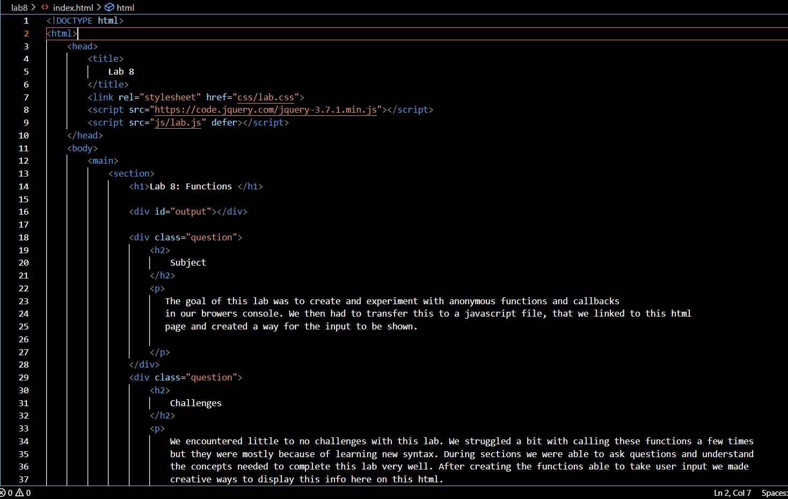

Lab 8: Anon Functions and Callbacks
Subject
The goal of this lab was to create and experiment with anonymous functions and callbacks in our browers console. We then had to transfer this to a javascript file, that we linked to this html page and created a way for the input to be shown.
Challenges
We encountered little to no challenges with this lab. We struggled a bit with calling these functions a few times but they were mostly because of learning new syntax. During sections we were able to ask questions and understand the concepts needed to complete this lab very well. After creating the functions able to take user input we made creative ways to display this info here on this html.
Results
The results of this lab can be viewed by inspecting the page and looking at the console! Instead of creating a bypass for allowing the javascript to be shown we linked it correctly within the head tags of our html. We also included some screenshots to show what is happening behind the scenes.
This is the javascript file for the output on this page.

This is a screenshot of a piece of the html for this page.
